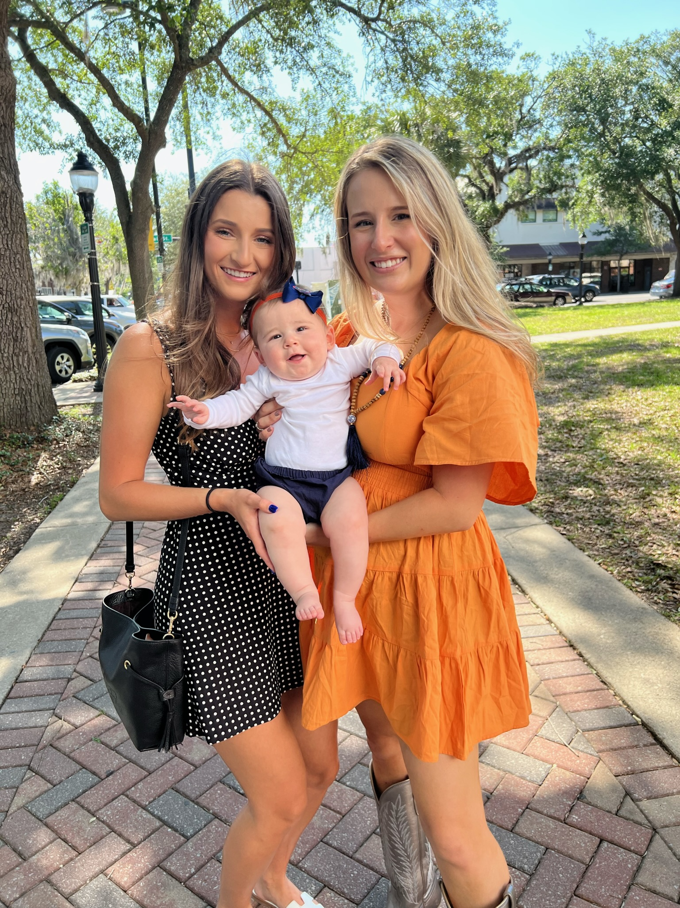
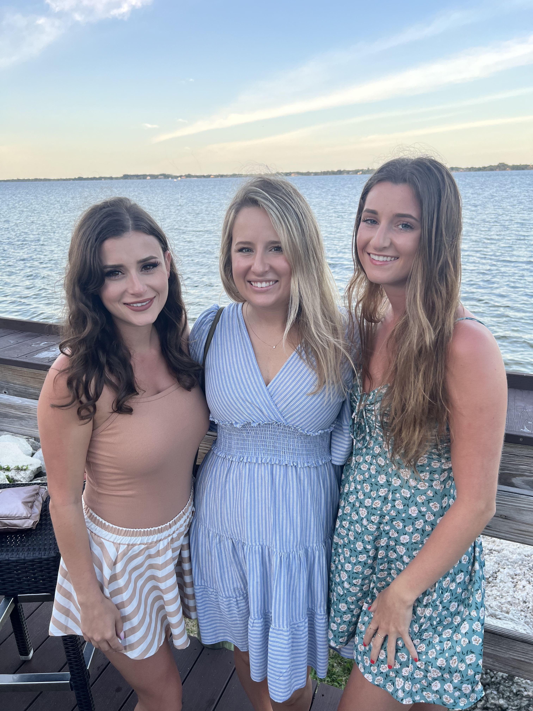
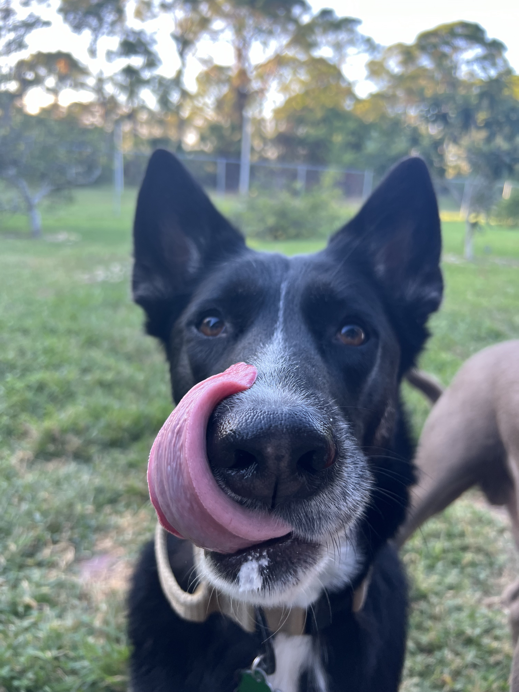
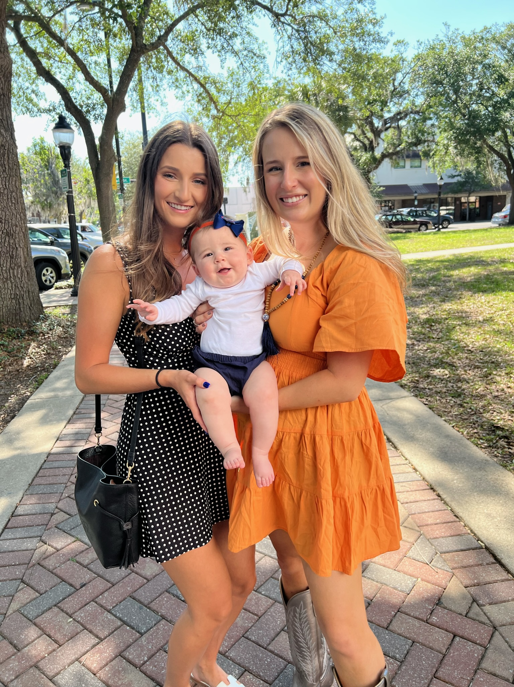
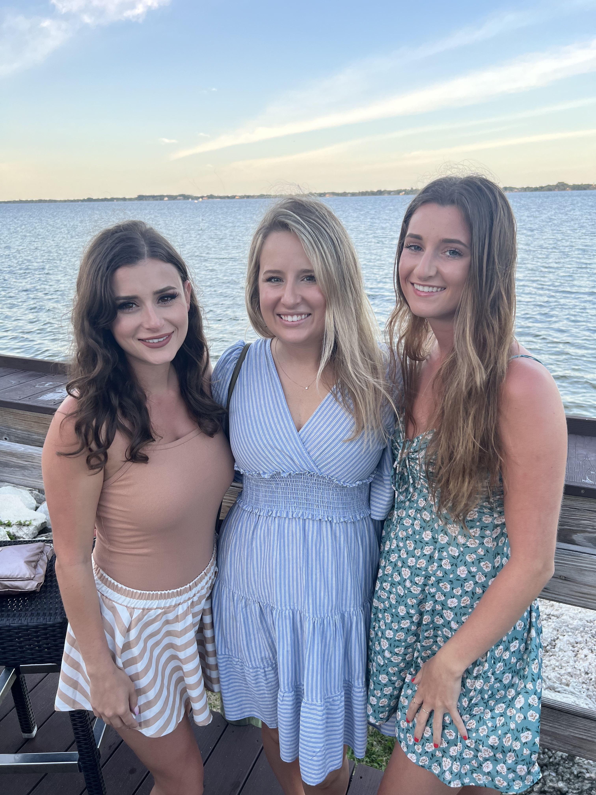
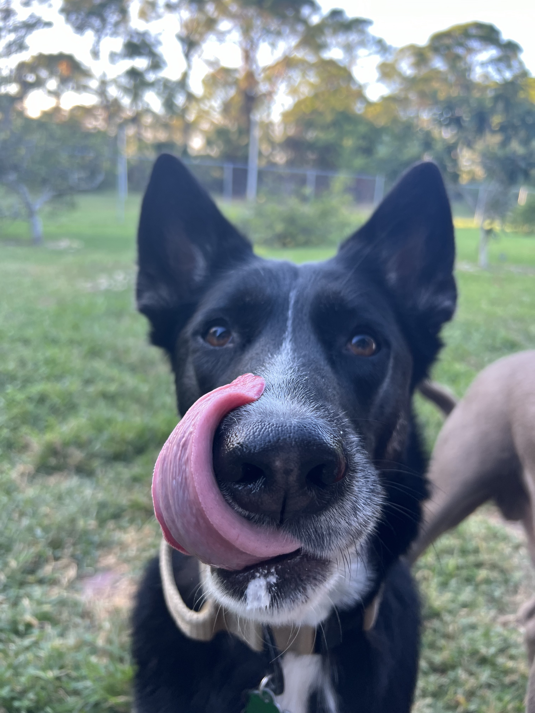

Beyond the world of academics, my life is blessed by an array of passions and hobbies. Most notable is my love for running, an activity that I share with my perfect companion—a 4-year old German Shepherd/Husky Mix named Milo.
My journey into running began at the end of 2022 along the trails of Gainesville, Florida. Running is truly not as easy as marathoners make it look, but I find beauty in the challenge. Driven by a personal goal, I embrace the sport with dedication, hard work, and discipline. Consistency, I've learned, is the true key to unlocking achievements, especially when it comes to running.
Spring of 2023 marked the commencement of another hobby—crocheting. I had a very humbling beginning in crafting my first dish rag, a project that, despite its quirks, proved effective. Through persistent practice, I mastered the classic dish rag—a token of my affection that now graces the homes of my family members.
Coming from an animal-centric background, my love for animals extends to my Milo, who basks in the perks of being a spoiled pup. Adopted from a re-homing situation in 2021, Milo became my breathe of fresh air during hectic college days.
In the realm of leisure, reading holds a special place. Engaging in a mini-book club with my best friend Haley and sister Colleen, we love to discuss our literary adventures.
Gallup's StrengthsFinder unveiled my top 5 strengths—achiever, harmony, relator, includer, and positivity. These strengths not only shape my professional endeavors but also manifest in my personal life. I find joy in surrounding myself with a close-knit circle of friends and family.
My immediate family, including my parents and two older sisters—Brittany, a speech-language pathologist, and Colleen, a meteorologist—are my pillars of inspiration. As of May 2024, I am now titled Auntie Ann by a precious niece and now nephew, thanks to Brittany!
And, of course, no 'About Me' page would be complete without a nod to my love for Starbucks. For me, there's nothing a Strawberry Acai Refresher with lemonade and light ice can't fix.